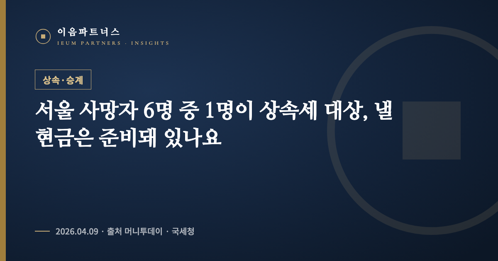

서울 사망자 6명 중 1명이 상속세 대상, 낼 현금은 준비돼 있나요

상속세는 한때 '1% 부자'의 세금으로 불렸지만 이제는 사정이 다릅니다. 2025년 서울에서는 사망자 5만 2,592명(잠정) 가운데 8,383명, 곧 15.94%가 상속세 과세 대상이었습니다. 6명 중 1명꼴입니다(머니투데이). 이 글에서는 상속세 대상이 얼마나 늘었는지, 그리고 재산이 회사 주식과 부동산에 묶여 있는 대표님이 세금 낼 현금을 왜 미리 준비해야 하는지 정리합니다.
상속세는 상속이 시작된 뒤 6개월 안에 신고해야 해서 막상 닥치면 준비할 시간이 많지 않습니다. 재산 대부분이 비상장주식이라면 팔아서 세금을 마련하기도 쉽지 않습니다. 우리 집 상속세가 대략 얼마일지 궁금하시면 카카오톡 채널 이음파트너스에서 함께 계산해 볼 수 있습니다.
상속세 대상, 얼마나 늘었나
국세청 국세통계를 보면 2024년 피상속인 35만 8,979명 가운데 상속세 과세 대상은 2만 1,193명으로 처음 2만 명을 넘었습니다. 국세청 처리 건수 기준 과세 비율은 5.90%로, 2005년 0.80%보다 크게 늘었습니다. 서울은 같은 기준으로 15.46%였습니다(머니투데이).
| 구분 | 내용 |
|---|---|
| 2024년 전국 | 과세 대상 2만 1,193명, 처리 건수 기준 5.90% (사망자 대비 5.91%) |
| 2024년 서울 | 처리 건수 기준 15.46%, 사망자 대비 14.67% |
| 2025년 전국 | 사망자 36만 3,389명(잠정) 중 2만 2,524명, 6.2% |
| 2025년 서울 | 사망자 5만 2,592명(잠정) 중 8,383명, 15.94% |
| 공제 기준 | 일괄공제 5억 원, 배우자공제 5억~30억 원, 1997년 이후 29년째 그대로 |
과세 대상이 늘어난 것은 공제 금액은 1997년 이후 묶여 있는데 집값과 자산 가치는 크게 올랐기 때문입니다(머니투데이).
문제는 세금 낼 현금입니다
상속세는 재산의 크기만큼이나 무엇으로 낼지가 중요합니다. 국세청은 상속세 절세 안내 책자에서 납세자금 대책을 마련해 두지 않으면 “상속재산을 처분해야 하거나 공매를 당하는 상황이 발생할 수도 있다”고 설명합니다(국세청 세금절약가이드Ⅱ). 공매는 세금을 내지 못한 재산을 국가가 강제로 파는 절차입니다.
법인 대표님의 재산은 비상장주식과 사업용 부동산 비중이 큰 경우가 많습니다. 비상장주식은 살 사람을 찾기 어렵고, 부동산은 급하게 팔면 제값을 받기 어렵습니다. 그 결과 재산은 충분한데 세금 낼 현금이 모자라는 상황이 생길 수 있습니다.
대표님이 지금 확인할 것
- 대표님 재산을 현금·예금, 부동산, 회사 주식으로 나눠 각각 얼마인지 적어 보세요.
- 예상 상속세와 바로 쓸 수 있는 현금을 비교해 부족한 금액이 얼마인지 확인하세요.
- 국세청은 사전증여, 연부연납(세금을 여러 해에 나눠 내는 제도), 물납(현금 대신 재산으로 내는 제도) 같은 대책을 검토하라고 안내합니다. 저마다 요건이 있으니 세무사와 함께 따져 보세요.
- 국세청은 상속세 계획을 10년 이상 길게 시행해야 효과가 크다고 설명합니다. 일찍 시작할수록 선택지가 많아집니다.
참고한 자료
- '16억' 강북 집 딱 한채 받아도 '2.7억'…부자만 내는 상속세? '옛말' — 머니투데이 (2026.09.21)
- [단독]1% 부자 세금? 중산층도 떠는 '낡은 상속세'…한 해 2만명 돌파 — 머니투데이 (2025.07.07)
- 세금절약가이드Ⅱ (양도소득세·상속·증여세) — 국세청 (2012.04)
상속세 재원을 어떻게 준비할지 고민이시라면 카카오톡 채널 이음파트너스로 편하게 문의해 주세요.
※ 이 글은 일반적인 정보 제공을 위한 것으로, 개별 사안은 세무사·노무사 등 전문가와 함께 확인하시기 바랍니다.